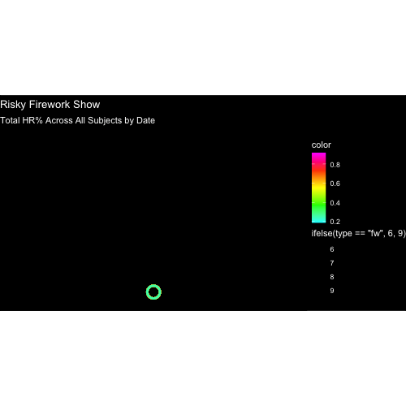

library(tidyverse)
library(lubridate)
library(gganimate)
library(gifski)creative-data-visualization
Risky Firework Show
My graduate research focuses on addiction and its effects on behavior and brain structure. One of my recent projects examined cognitive function in the context of risky decision-making using a novel reward-based lever-pressing paradigm called the “Blackjack Task.”
In this study, animals were trained to use a lever-pressing device, distinguish between a high-reward and low-reward lever, and eventually assess different levels of risk magnitude.
I analyzed data from the initial training phase—when the animals were first introduced to reward contingencies—through the introduction of risk. The goal was to observe a preference for the high-reward lever in the absence of risk and a decline in this preference as risk was introduced.
To visualize this behavioral shift over time, I used animated firework-style graphics that highlighted changes in lever preference across training days.
Preliminaries
I created a streamlined version of the original dataset containing four key variables for the presentation: Subject, Sex, StartDate, and TOT HR%. These represent the animal’s identification number, its sex, the date of testing, and the proportion of high-reward presses, respectively.
Data Wrangling
# Load data
d <- read_csv("~/Desktop/ADA-REPO/creative-data-visualization/CDV-Data.csv", col_names = TRUE)
# Prepare female rat data
d_Male <- d |>
filter(Sex == "M") |> # Filter out online the male subjects from the dataset
mutate(StartDate = mdy(StartDate)) |> # Convert date text into an object
drop_na(`TOT HR%`) |> # Remove any NA values from TOT HR% column
mutate(color = `TOT HR%`) # Change the name to color for better interpretationMaking Fireworks
Contrary to popular belief, fireworks don’t simply appear in the sky—they’re launched like missiles that propel upward. I wanted to replicate that missile-like trajectory using the following parameters as my starting point. Note: Everywhere you see the variable fw, it is simply an abbreviation for “fireworks.”
launch_height <- 1.5
fw_steps <- 8
fw_per_rat <- 15
frame_counter <- 1To highlight the transition in risk expression across days, I grouped the dataset by day, splitting the original data into four distinct subsets.
grouped_by_day <- split(d_Male, d_Male$StartDate)
firework_show <- list()This loop goes through each unique testing day and creates an animated firework sequence for all rats tested on that day. It generates a vertical “missile” animation for each rat, followed by an explosion of colored sparks whose size and spread are based on each rat’s risk score or TOT HR%. All these frames are stored and combined into a single dataset called fireworks.
for (day_data in grouped_by_day) {
n <- nrow(day_data)
day_data <- day_data %>% mutate(x0 = 0)
launches <- map_dfr(1:fw_steps, function(i) {
day_data %>%
mutate(
frame = frame_counter + i - 1,
x = x0,
y = (i / fw_steps) * launch_height,
type = "missile"
)
})
fw <- map_dfr(1:fw_steps, function(step) {
day_data %>%
slice(rep(1:n(), each = fw_per_rat)) %>%
mutate(
angle = runif(n(), 0, 2 * pi),
color = rep(day_data$color, each = fw_per_rat),
x0 = 0
) %>%
mutate(
dist = color * (step / fw_steps),
frame = frame_counter + fw_steps + step - 1,
x = x0 + dist * cos(angle),
y = launch_height + dist * sin(angle),
type = "fw"
)
})
firework_show[[length(firework_show) + 1]] <- bind_rows(launches, fw)
frame_counter <- frame_counter + (2 * fw_steps)
}
fireworks <- bind_rows(firework_show)Next, I used ggplot to set up the visual environment and define the plot dynamics. For the spark colors, I chose a mix of neon shades to make them stand out. I set the background to black to resemble a night sky—after all, no one watches fireworks during the day.
p <- ggplot(fireworks, aes(x = x, y = y, group = Subject)) +
geom_point(
aes(color = color, size = ifelse(type == "fw", 6, 9)),
shape = 1, stroke = 2, alpha = 1) +
scale_color_gradientn(colors = c("#00FFFF", "#00FF00", "#FFFF00", "#FF4500", "#FF00FF")) +
coord_fixed(xlim = c(-2.5, 2.5), ylim = c(0, 3)) +
theme_void() +
labs(
title = "Risky Firework Show",
subtitle = "Total HR% Across All Subjects by Date"
) +
theme(
plot.background = element_rect(fill = "black"),
panel.background = element_rect(fill = "black"),
text = element_text(color = "white")
) +
transition_manual(frames = frame)Finally, I animated the visualization.
animate(p, fps = 10, width = 500, height = 500, renderer = gifski_renderer("fireworks.gif"))End Results
knitr::include_graphics("fireworks.gif")